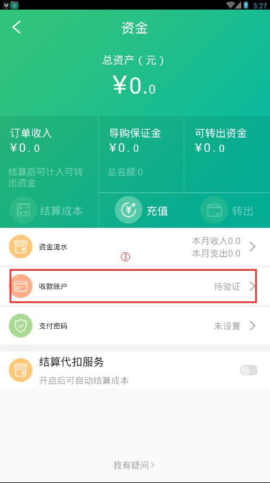

29. 如何将企业中的资金转出？
1.进入企业空间页面，点击"..."—>"资金"，进入资金页面。
2. 在资金页面，点击"收款账户"，进入验证账户页面。
3. 在收款账户页面，填写好所需信息后，点击"确定提交"，等待验证成功。
4. 返回资金页面，点击“支付密码”。
5. 进入"设置密码页面"，输入获取的验证码，并输入支付密码、确认支付密码，然后点击"确定"。

6. 在资金页面，点击"转出"。
7. 在转出页面中，输入待提现的金额，点击"确定"。
- 注：提现记录可在资金流水中查看。